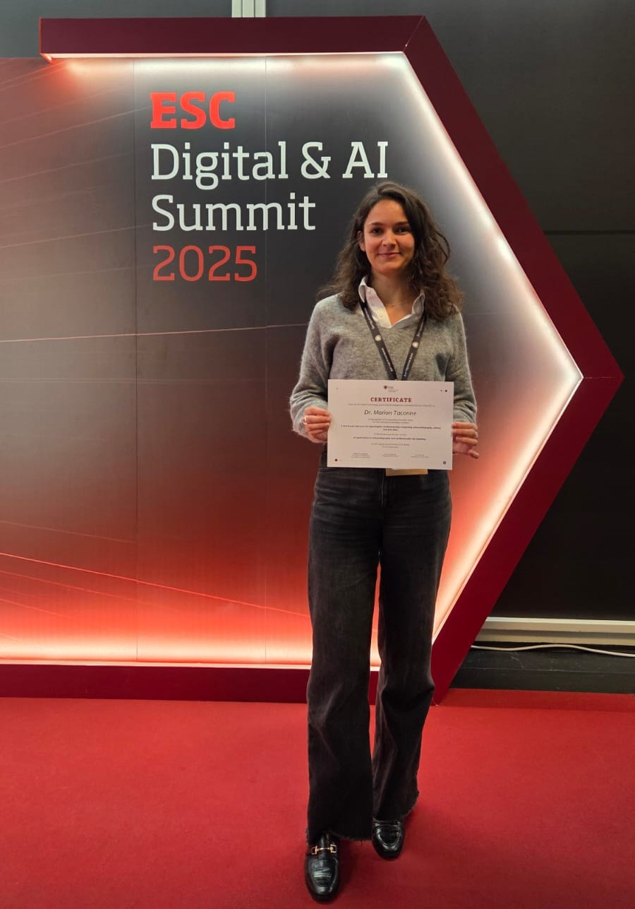

Advancing the field of cardiovascular research and clinical decision support.
Scientific
Development of novel stratification methods integrating real-world data with physiological modeling, ML, and advanced signal processing.
Societal
Enhance patient outcomes, reduce unnecessary treatments, and increase healthy life years.
Economic
Lower healthcare costs by reducing hospital readmissions and the need for invasive procedures.
Presentations and dissemination activities associated with the project:
-
CinC 2025 (Sao Paulo, Brazil): "New Echocardiographic Risk Score for HCM Patients Follow-up."
TACONNÉ M., CORINO V., DEL FRANCO A., INSINNA E., CERVERI P., OLIVOTTO I., and MAINARDI L.
DOI: 10.22489/CinC.2025.083
-
CinC 2025 Physionet Challenge (Sao Paulo, Brazil): "ECG-Based Screening of Chagas Disease Using Deep Residual Networks."
TACONNÉ M., MAGNI S., DRUDI C., PAGOTTO S., CORINO V., CERVERI P., Bianchi A., BARBIERI R., and MAINARDI L.
DOI: 10.22489/CinC.2025.335
-
EMBC 2025 (Copenhagen, Denmark): "Extraction of Risk Markers from ECG in Patients with Hypertrophic Cardiomyopathy."
TACONNÉ M., CORINO V., MERLOT A., AL WAZZAN A., DONAL E., CERVERI P., and MAINARDI L.
DOI: 10.1109/EMBC58623.2025.11254105
-
EMBC 2025 (Copenhagen, Denmark): "Development of an Explainable-AI Enabled Decision Support System for Improved Risk Assessment of Atrial Fibrillation in Cardiac Patients during Hospital Stay."
TORQUATI M., BULLONI M., TACONNÉ M., CMORENO-SANCHEZ P., KALLONEN A., VEHKAOJA A., LYYTIKANEN L., PATTINI L., CORINO V., WERBA P., RURALI E., BRUKAMP K., TIRSCHMANN F., MAINARDI L., and VAN GILS M.
DOI: 10.1109/EMBC58623.2025.11252713
-
EMBC 2025 (Copenhagen, Denmark): "A new cardiovascular model integrating coronary circulation in obstructive and non-obstructive hypertrophic cardiomyopathy."
MENNA F., DUPREZ J., AL WAZZAN A., TACONNÉ M., SENDHADJI L., ANDERSON N., HYTTINEN J., DONAL E., HERNANDEZ A., and LE ROLLE V.
DOI: 10.1109/EMBC58623.2025.11251831
-
ESC Digital & AI Summit 2025 (Berlin, Germany): "A New 5-Year Risk Score for Hypertrophic Cardiomyopathy: Integrating Echocardiography, Clinical, and ECG Data."
TACONNÉ M., CORINO V., DEL FRANCO A., INSINNA E., CERVERI P., OLIVOTTO I., and MAINARDI L.
DOI: 10.1093/ehjdh/ztaf143.063
★ ESC AI & Digital Summit BEST E-poster AWARD
Prize for the work presented at the ESC AI & Digital summit 2025.

Key publications related to this research:
-
TACONNÉ M., CORINO V. and MAINARDI L. (2025). "An ECG-based model for left ventricular hypertrophy detection: a machine learning approach." IEEE Open Journal of Engineering in Medicine and Biology, vol 6, page 219-226. IF: 2.7.
DOI: 10.1109/OJEMB.2024.3509379
Description: Proposition of LVH classifiers based on ECG extracted features, trained and validated on open-source database, compared with LVH-ECG criteria of the literature.
Hosted at Politecnico di Milano (POLIMI) with collaborations including the University of Milan (UMIL).